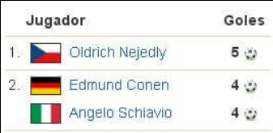

La segunda Copa del Mundo de la historia se disputó en Europa. Benito Mussolini vio en el futbol un gran escaparate para publicitar su régimen fascista e Italia fue "escogida" como segunda sede en 1934. El dictador italiano no vaciló en amenazar a su competidor (Suecia) y al presidente de la FIFA (Jules Rimet) con tal de que Italia organizase la Copa Mundial. Para // Duce solo habia dos opciones en aquel Mundial "Vencer o morir".
Los Oriundi reforzaron a la azzurra
El gobierno italiano prepar6 con antelacién la victoria italiana conformando un equipo lleno de extranjeros. Guarisi llego desde Brasil y Atilio Demaria, Enrique Guaita, Raimundo Orsi y Luis Monti de Argentina. Este ultimo fue capitan y subcampeón con la albiceleste en Uruguay 1930 y, como el resto de los oriundi, comenzó a jugar en el Calcio para reforzar a la azzurra. El seleccionador italiano, Vittorio Pozzo, defendié su acogida pueden morir por Italia, pueden jugar con Italia"
Sin campeón y con eliminatorias
Después del éxito de la primera edición, 34 naciones quisieron ser participes de la Copa Mundial. Por ello y por primera vez fue necesario jugar eliminatorias previas. Hasta los anfitriones participaron en la ronda clasificatoria goleando a Grecia por 4-0. 12 selecciones europeas obtuvieron el billete a Italia.
En América participaron solo tres paises (Argentina, Brasil y Estados Unidos), mientras que Egipto se convirtió en el primer equipo africano en disputar un Mundial. Uruguay, receloso del boicot europeo de cuatro afios antes en su Mundial, renunció a participar. Los argentinos habian prometido solidarizarse con sus vecinos y, aunque estuvo cerca de no participar, presentó un combinado completamente amateur.
16 selecciones jugaron la fase final, que esta vez se resolveria Unicamente a través de eliminatorias. El 27 de mayo de 1934 comenzo el torneo. Italia se encargó de medirse al rival mas sencillo y superó con claridad a Estados Unidos por 7-1. Brasil y Argentina completaban el fracaso americano al caer con Suecia y España respectivamente. Checoslovaquia, Alemania, Austria, Suiza y Hungria completaron el cuadro de cuartos de final.
El primer gran "robo" de los mundiales
Cuatro dias mas tarde se disputo la siguiente ronda. La anfitriona se media en Florencia a una entusiasta selección española, donde destacaban jugadores como Quincoces, Langara y sobre todo su gran portero Ricardo Zamora. Luis Regueiro adelantó a España a los 29 minutos y Giovanni Ferrari empató antes del descanso.
El gol italiano Ilegó en extrañas circunstancias, después de 7 saques de esquina consecutivos y tras una clara falta de Schiavo al guardameta español. La segunda parte estuvo marcada por la dureza del juego italiano y la incapacidad de ambos equipos para anotar. Después de una prórroga y 120 minutos se acordó disputar un partido de desempate al dia siguiente.
España e Italia se median de nuevo lastrados por la batalla anterior (Aquella eliminatoria se conoce como la Batalla de Florencia). Sobre todo los españoles que se presentaron con 7 bajas, incluido el portero Ricardo Zamora (con dos costillas rotas). Italia perdió a tres pero salió decidido a ganar la guerra contra los republicanos españoles. Los italianos siguieron jugando al limite del reglamento hasta lesionar Bosch, Chacho, Regueiro y Quincoces.
Giuseppe Meazza marcó el unico gol del encuentro en el minuto 11. España perdió 1-0 en un partido marcado por la actuacion del arbitro René Mercert. El colegiado suizo anuló dos goles a España, uno por fuera de juego y otro para concederle una extraña falta directa previa al tanto. El escandalo fue tan evidente que cuando Mercet regresó a su pais fue expulsado del arbitraje de por vida.
Los anfitriones se midieron a la Austria de Josef Bican y Matthias Sindelar en semifinales. Guaita dio el pase a los italianos marcando el único gol de otro partido cargado de polémica. El tanto vino precedido de otra clara falta sobre portero austriaco, esta vez de Meazza. Pero el juez sueco Ivan Eklind se limitó asegurar el triunfo italiano pasando por alto un claro penalti de Monti. La azzurra estaba en la final donde se mediria a Checoslovaquia (que habia eliminado a Alemania por 3-1).
La final se presentaba como una batalla y de nuevo, el sueco Eklind era el encargado de impartir justicia. Los checoslovacos se dieron cuenta enseguida de que no iban a contar con la ayuda del colegiado. En el primer tiempo obvió un claro penalti sobre Puc, que sorprendentemente adelantó a su selección a 15 minutos del final.
En el descanso Mussolini entró al vestuario para arengar a sus compatriotas o mas bien para amedrentarlos. A su técnico le mando un mensaje claro: "Sefior Pozzo, usted es el unico responsable del éxito, pero que Dios lo ayude si llega a fracasar" Después del gol bohemio, Italia estaba contra las cuerdas pero Orsi empató a tiempo para llevar el encuentro al tiempo extra. En la prórroga Schiavio anotó el definitivo 2-1 para dar el titulo a Italia.
Los jugadores italianos habian sido campeones del Mundo pero en lugar de celebrarlo con alegria respiraron con alivio. Enfurecer a Mussolini no hubiera sido una gran idea. Aquel triunfo no fue el del futbol italiano sino el del fascismo. El italo-argentino Monti lo explicó asi "En Uruguay 1930 me mataban si ganábamos, en italia me mataban si perdíamos".
La Final
ITALIA (2-3-2-3): Combi; Monzeglio, Allemandi; Ferraris, Monti, Bertolini; Meazza, Ferrari; Guaita, Schiavio, Orsi.
CHECOSLOVAQUIA (2-3-5): Planicka; Ctyroky, Zenisek; Krcil, Cambal, Kostalek; Puc, Nejedly, Sobotka, Svoboda, Junek.
Goles: Antonin Puc (0 - 1 min. 70), Raimundo Orsi (1 - 1 min. 81), Angelo Schiavio (2 - 1 min. 95).
Arbitro: Ivan Eklind -SUE- (colegiado), Louis Andre Baert -BEL- y Mihaly Ivancsics -HUN- (auxiliares)
Estadio: Stadio Nazionale, Roma (55.000 espectadores)
Datos del Mundial ITALIA 1934 Selecciones/partidos: (16/17) Goles: 70 Media goles: 4,12 Goleadores:  Ciudades/estadios: 8/8 (Roma, Florencia, Blogna, Milan, Napoles, Génova, Turin y Trieste) Media asistencia: 21.058